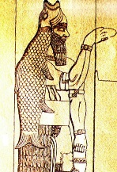
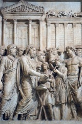
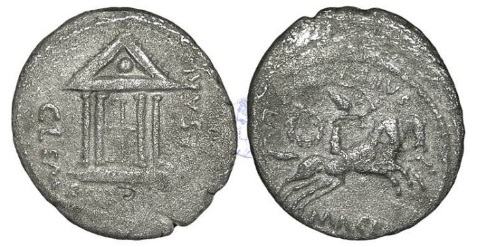
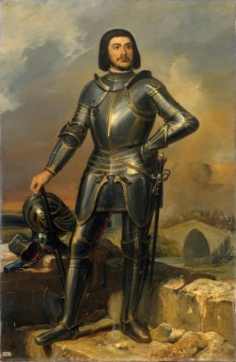
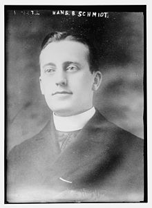
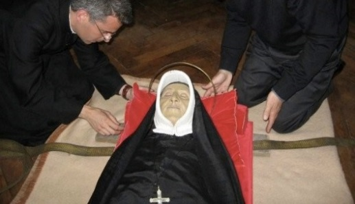
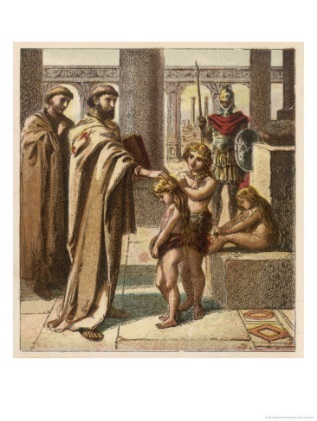
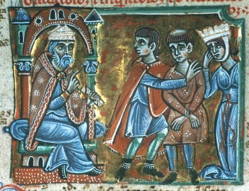
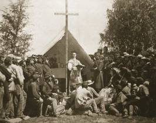

A cardinal hosts a bathtub party (orgy) fit for a king

Pope Sixtus IV was known for being a “lover of boys”
A monk lusts after a married woman

A monk lusts after another

Monk-ey business-a-plenty with gay clergy

Nothing like a comforting word to get you all choked-up

This Medieval engraving depicts the Pope, a monk, and harlots partying in Hell
The fresco above (dated 1475), entitled: “Doom Mural” is on display at St. Thomas’ Church, Salisbury, England. It features the Pope, a monk, a couple of kings, and a bevy of harlots in a biblical scene in Hell. Revelation 17— “BABYLON THE GREAT (Empire of False Religion), THE MOTHER OF HARLOTS.”
The Nativity scene of the three wise men visiting the baby Jesus in a manger has long been a beloved image that the Roman Catholic Church likes to remind its members of annually. But this was not the true portrayal of the events that actually took place prior to the vicious slaughter of infants aged 2 and under by a king

The Church’s saintly and diluted version of Herod blessing the Magi—Mosaic (431AD)

Herod’s annihilation of infants
Israelite King Herod, like so many of the past Roman emperors, feared anyone who could be a potential usurper to his throne or his royal line, so much so that he even killed his own ambitious son. After hearing about the prophesied birth of Jesus, Herod sent the three wise men to locate the newborn infant. When they found Jesus, he was in a “house”, not a manger! The King had death in mind for the Son of God. From a logical standpoint, would God really have directed those astrologers (sacrificial priests) to Jesus so that it resulted in the infant’s death? No! The star that they followed was a result of demonic intervention, that’s why those astrologers never returned to Herod, as a result of Divine intervention. (Mathew 2:11, 12, 16-18) Those astrologers also had more satanic talents besides studying the stars. They were Magi priests who were linked to child sacrifice, a popular and ungodly practice back in the day, which accompanied Sun worship and harvest festivals. (Deut. 12:31 & Jeremiah 32:35)
Symbols of pagan and demonic worship that were linked to astrology-based child sacrifice
(From left-to-right) Shaman cross, Tammuz, Talisman of Saturn (Star of Rephan), Molech, Magi, Baal-Hammon, and Zoroastrianism.

Dagon priest, child-offering, and a demon
*The Magi used raw animal livers to look for signs that they believed matched up with celestial events to predict the future. ("Magic" comes from Magi)
Let’s not forget that when Jesus was born, the shepherds were living “outdoors” with their flocks (Luke 2:8), which meant they would have froze to death. Those animals would have been put inside an enclosure (cave, manger etc.) if it was mid-winter. The month was more likely to be that of October. December 25th was the day the Temple of Sol Invictus and its priestly college was officially completed. Sunday was created as a rest day for religious observance to coincide with it. The Catholic Church later assimilated it.
Ostara (Eostre) Easter was yet another product of assimilation by the Roman Catholic Church. This German myth/folk tale consists of a fairy-like goddess of fertility, who flies through the heavens, surrounded by cherubs, beams of light, and rabbits. If I was employed centuries ago in the Marketing Department of the Catholic Church, I, too, wouldn’t hesitate for a second in snatching up this little piece of major product placement, oven ready for religious exploitation. Seeing as it already had a cult following, then it couldn’t get any better than that! The Anglo-Saxons were the first to adopt this nippy little vixen…with the Catholic Church grabbing her later.

To the unwary, some ancient Roman coins that remained legal tender for centuries could easily have fooled people into believing that a temple of worship, which had a cross attached, was primarily a place for Christian worship, but when you match it next to an engraved image of a temple that featured the emperor Marcus Aurelius, the cross can be seen as nothing more than wooden paneling in the doors of a temple used for the worship of Roman emperors or their gods. And that’s not a cross on the temple’s apex, either!

Julius Ceasar/Clementia goddess coin
Emperor Augustus’ coin—Temple of Julius Caesar

Octavian’s coin—signifying Julius Caesar as a deity

Temple of Julius Caesar as it would have looked
Julius Caesar bore the title: “Pater Patriae”, and this became the title for the head priest of the pagan (“irreligious”—Webster’s Dictionary) god Mithras. Pater Patriae was later shortened to Pa-Pa, becoming Pope (PAPAL).
 SHAMANS
SHAMANS
Shamans started as tribal priests, then became Egyptian magic-practicing priests, sorcerers, and over time turned up as witch doctors and contactors of evil spirits. Many centuries before Christ was born, Tammuz priests (child-killers) believed they were mediators between their god and man. They dropped the horizontal part of the “T” in their god’s name, which then become a symbol for the Sun.
Fertility and agriculture were a big part of the Shaman’s lives--a good harvest meant their god was pleased, but a bad harvest meant a bad omen and the land was cursed, not to mention the people. This lead to the heinous ritual of human (infant) sacrifice. Tammuz means: “Purify by Fire”. The biblical prophet Moses had the upper hand over the magic practicing priests when God brought the 10 plagues of Egypt.

ANKE—Egyptian symbol of afterlife and priesthood
(The Catholic Church snagged this bad boy)
Cross of Native American Shaman who summons the dead
King Agathocles, and Greek god Zeus holding a figurine of Hekate
Hekate (Hecate) Mythical Greek trinity goddess of magic, crossroads, ghosts, and necromancy
The Greek coin above, dated 190-180 BCE, features the pagan Greek goddess Hekate holding torches to light the darkness at the Crossroads where the land of the living meet the land of the dead, which is also represented by the cross symbol seen on it. The images of Hekate usually have her with a halo of sunrays (similar to Sol Invictus) emanating from her head, like a light beacon for illuminating the point where the dead meet the living. It’s ironic that the Word of God (Bible) mentions that “Satan is transformed into an angel of light.”—2 Cor. 11:14
The current Pope keeps a statue of Hekate in his trophy room (the Vatican Museum).
Bernard de Castanet (1240-1317) Lawyer, judge, Catholic cardinal-bishop, member of the Inquisition
Bernard was Bishop of Albi, and during this time he had a power struggle with local land owners. It was Bernard’s intent to build a fortress-like cathedral in a place he deemed suitable no matter who objected. In fact, so determined was Bernard in getting his way that he lowered himself to the role of a fear-mongerer. Bernard thus accused those who opposed his decisions of being heretics, a crime that led a person to being burned at the stake. This kind of persuasive fear-mongering wasn’t new with the Roman Catholic Church. If it had been, their concept of eternal torment in hell would never have come about. It’s nothing short of productplacement, designed to bolster Sunday Church attendance and keep contributions flowing in. Today, it’s called PTL, only with less emphasis on Praise The Lord and more on Pass The Loot.
In 1307, Bernard got himself into a bit of a bother when he was accused of murder, pastoral neglect, simony, cruelty in the exercise of justice, and 42 other offenses. Even with the damning testimony of 114 witnesses, Pope Clement V still, after all that, swept the evidence under the papal carpet and restored Bernard’s official duties to him. If Bernard was a man of the cloth, he was more in need of a spiritual wash cloth than anything else!
Gilles de Rais (1405-1440) French lord, Catholic/Christian…? knight, leader of the French Army
You may not remember the name, but you will most certainly know his companion-in-arms, Joan of Arc. Those demonic voices that Joan supposedly heard in her head prior to her execution…well, they might just have whispered a few evil intentions into the ears of this revered and high-ranking warrior. During the years 1431-1440, Gilles became known as one of the most sadistic, child serial killers in all of France for murdering and butchering some 80 boys and girls, ages 4-18, for self-sexual gratification. At the time, the number was thought to possibly be as high as 200. And get this! During that same time, Gilles had a church built, called the Chapel of the Holy Innocents. Gilles’ relatives appealed to Pope Eugene IV to disavow Gilles’ church but the Pope refused to do so. Gilles and two accomplices were arrested, tried, and hung for what they did. But just when you thought it safe to get this disturbing account farthest from your mind, it doesn’t end there!!! Gilles’ last request to be buried in the Church of the Monastery of Notre-Dame de Carmes was granted by the Church! Yikes!!!